Derivatives
Device and media usage changes at different rates for different groups of people. Communication and technology companies, marketers, educators, and their advocates maintain a close watch on trends and preferences. According to data from the Pew Research Center, Millennial ownership of smartphones only increased by one percent from 2018 to 2019 (from 92% to 93%). But for people over 74 years old, the number jumped from 30% to 40% in the same period.
Other device ownership and usage trends may go in different directions by generation. From 2018 to 2019, Millennial tablet computer ownership dropped from 64% to 52%. But during the same period, the Baby Boom generation's tablet computer ownership stayed exactly even with 52% reporting ownership. And the 74-and-older group's tablet ownership increased from 25% to 33%.https://www.pewresearch.org/fact-tank/2019/09/09/us-generations-technology-use/
What do these scenarios have in common? The functions representing them have changed over time. In this section, we will consider methods of computing such changes over time.
Finding the Average Rate of Change of a Function
The functions describing the examples above involve a change over time. Change divided by time is one example of a rate. The rates of change in the previous examples are each different. In other words, some changed faster than others. If we were to graph the functions, we could compare the rates by determining the slopes of the graphs.
A tangent line to a curve is a line that intersects the curve at only a single point but does not cross it there. (The tangent line may intersect the curve at another point away from the point of interest.) If we zoom in on a curve at that point, the curve appears linear, and the slope of the curve at that point is close to the slope of the tangent line at that point.
- slope at is 8
- slope at is –1
- slope at is 8
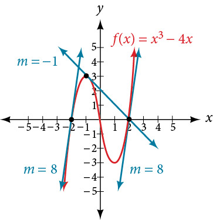
Let’s imagine a point on the curve of function at as shown in Figure 2. The coordinates of the point are Connect this point with a second point on the curve a little to the right of with an x-value increased by some small real number The coordinates of this second point are for some positive-value
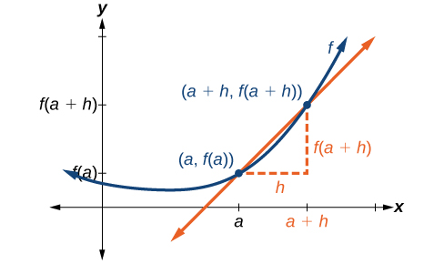
We can calculate the slope of the line connecting the two points and called a secant line, by applying the slope formula,
We use the notation to represent the slope of the secant line connecting two points.
The slope equals the average rate of change between two points and
Finding the Average Rate of Change
Find the average rate of change connecting the points and
Solution
We know the average rate of change connecting two points may be given by
If one point is or then
The value is the displacement from to which equals
For the other point, is the y-coordinate at which is or so
Understanding the Instantaneous Rate of Change
Now that we can find the average rate of change, suppose we make in Figure 2 smaller and smaller. Then will approach as gets smaller, getting closer and closer to 0. Likewise, the second point will approach the first point, As a consequence, the connecting line between the two points, called the secant line, will get closer and closer to being a tangent to the function at and the slope of the secant line will get closer and closer to the slope of the tangent at See Figure 3.
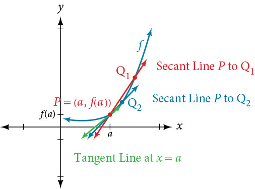
Because we are looking for the slope of the tangent at we can think of the measure of the slope of the curve of a function at a given point as the rate of change at a particular instant. We call this slope the instantaneous rate of change, or the derivative of the function at Both can be found by finding the limit of the slope of a line connecting the point at with a second point infinitesimally close along the curve. For a function both the instantaneous rate of change of the function and the derivative of the function at are written as and we can define them as a two-sided limit that has the same value whether approached from the left or the right.
The expression by which the limit is found is known as the difference quotient.
Derivatives: Interpretations and Notation
The derivative of a function can be interpreted in different ways. It can be observed as the behavior of a graph of the function or calculated as a numerical rate of change of the function.
- The derivative of a function at a point is the slope of the tangent line to the curve at The derivative of at is written
- The derivative measures how the curve changes at the point
- The derivative may be thought of as the instantaneous rate of change of the function at
- If a function measures distance as a function of time, then the derivative measures the instantaneous velocity at time
Finding the Derivative of a Polynomial Function
Find the derivative of the function at
Solution
We have:
Substitute and
Finding Derivatives of Rational Functions
To find the derivative of a rational function, we will sometimes simplify the expression using algebraic techniques we have already learned.
Finding the Derivative of a Rational Function
Find the derivative of the function at
Solution
Finding Derivatives of Functions with Roots
To find derivatives of functions with roots, we use the methods we have learned to find limits of functions with roots, including multiplying by a conjugate.
Finding the Derivative of a Function with a Root
Find the derivative of the function at
Solution
We have
Multiply the numerator and denominator by the conjugate:
Finding Instantaneous Rates of Change
Many applications of the derivative involve determining the rate of change at a given instant of a function with the independent variable time—which is why the term instantaneous is used. Consider the height of a ball tossed upward with an initial velocity of 64 feet per second, given by where is measured in seconds and is measured in feet. We know the path is that of a parabola. The derivative will tell us how the height is changing at any given point in time. The height of the ball is shown in Figure 4 as a function of time. In physics, we call this the “s-t graph.”
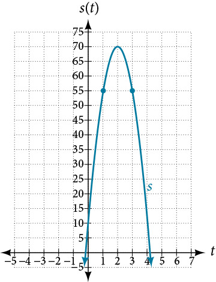
Finding the Instantaneous Rate of Change
Using the function above, what is the instantaneous velocity of the ball at 1 second and 3 seconds into its flight?
Solution
The velocity at and is the instantaneous rate of change of distance per time, or velocity. Notice that the initial height is 6 feet. To find the instantaneous velocity, we find the derivative and evaluate it at and
For any value of , tells us the velocity at that value of
Evaluate and
The velocity of the ball after 1 second is 32 feet per second, as it is on the way up.
The velocity of the ball after 3 seconds is feet per second, as it is on the way down.
Using Graphs to Find Instantaneous Rates of Change
We can estimate an instantaneous rate of change at by observing the slope of the curve of the function at We do this by drawing a line tangent to the function at and finding its slope.
Estimating the Derivative at a Point on the Graph of a Function
From the graph of the function presented in Figure 5, estimate each of the following:
- ⓐ
- ⓑ
- ⓒ
- ⓓ
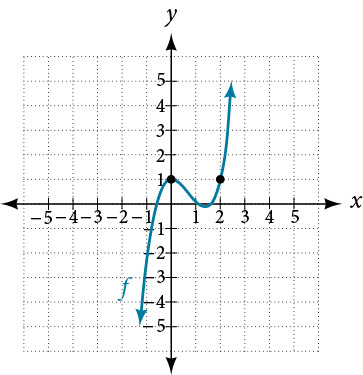
Solution
To find the functional value, find the y-coordinate at
To find the derivative at draw a tangent line at and estimate the slope of that tangent line. See Figure 6.
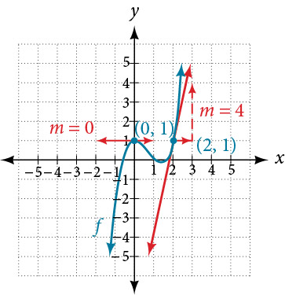
- ⓐ is the y-coordinate at The point has coordinates thus
- ⓑ is the y-coordinate at The point has coordinates thus
- ⓒ is found by estimating the slope of the tangent line to the curve at The tangent line to the curve at appears horizontal. Horizontal lines have a slope of 0, thus
- ⓓ is found by estimating the slope of the tangent line to the curve at Observe the path of the tangent line to the curve at As the value moves one unit to the right, the value moves up four units to another point on the line. Thus, the slope is 4, so
Using Instantaneous Rates of Change to Solve Real-World Problems
Another way to interpret an instantaneous rate of change at is to observe the function in a real-world context. The unit for the derivative of a function is
Such a unit shows by how many units the output changes for each one-unit change of input. The instantaneous rate of change at a given instant shows the same thing: the units of change of output per one-unit change of input.
One example of an instantaneous rate of change is a marginal cost. For example, suppose the production cost for a company to produce items is given by in thousands of dollars. The derivative function tells us how the cost is changing for any value of in the domain of the function. In other words, is interpreted as a marginal cost, the additional cost in thousands of dollars of producing one more item when items have been produced. For example, is the approximate additional cost in thousands of dollars of producing the 12th item after 11 items have been produced. means that when 11 items have been produced, producing the 12th item would increase the total cost by approximately $2,500.00.
Finding a Marginal Cost
The cost in dollars of producing laptop computers in dollars is At the point where 200 computers have been produced, what is the approximate cost of producing the 201st unit?
Solution
If describes the cost of producing computers, will describe the marginal cost. We need to find the derivative. For purposes of calculating the derivative, we can use the following functions:
The marginal cost of producing the 201st unit will be approximately $300.
Interpreting a Derivative in Context
A car leaves an intersection. The distance it travels in miles is given by the function where represents hours. Explain the following notations:
- ⓐ
- ⓑ
- ⓒ
- ⓓ
Solution
First we need to evaluate the function and the derivative of the function and distinguish between the two. When we evaluate the function we are finding the distance the car has traveled in hours. When we evaluate the derivative we are finding the speed of the car after hours.
- ⓐ means that in zero hours, the car has traveled zero miles.
- ⓑ means that one hour into the trip, the car is traveling 60 miles per hour.
- ⓒ means that one hour into the trip, the car has traveled 70 miles. At some point during the first hour, then, the car must have been traveling faster than it was at the 1-hour mark.
- ⓓ means that two hours and thirty minutes into the trip, the car has traveled 150 miles.
Finding Points Where a Function’s Derivative Does Not Exist
To understand where a function’s derivative does not exist, we need to recall what normally happens when a function has a derivative at . Suppose we use a graphing utility to zoom in on . If the function is differentiable, that is, if it is a function that can be differentiated, then the closer one zooms in, the more closely the graph approaches a straight line. This characteristic is called linearity.
Look at the graph in Figure 8. The closer we zoom in on the point, the more linear the curve appears.
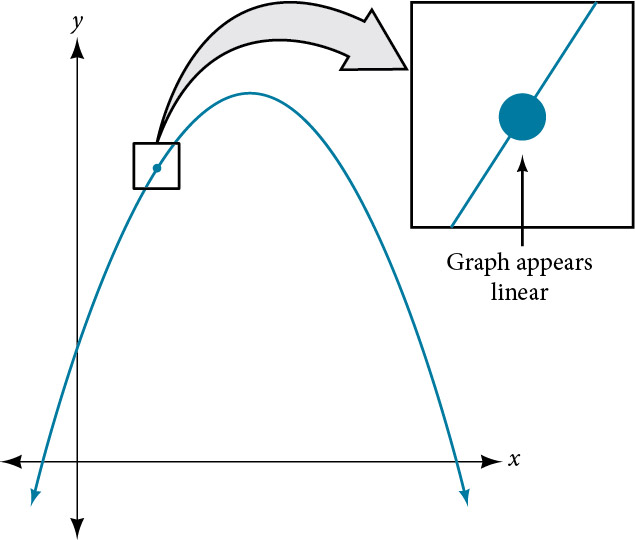
We might presume the same thing would happen with any continuous function, but that is not so. The function for example, is continuous at but not differentiable at As we zoom in close to 0 in Figure 9, the graph does not approach a straight line. No matter how close we zoom in, the graph maintains its sharp corner.
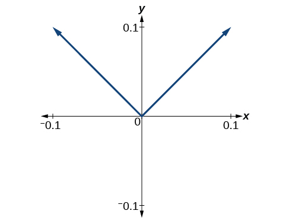
We zoom in closer by narrowing the range to produce Figure 10 and continue to observe the same shape. This graph does not appear linear at
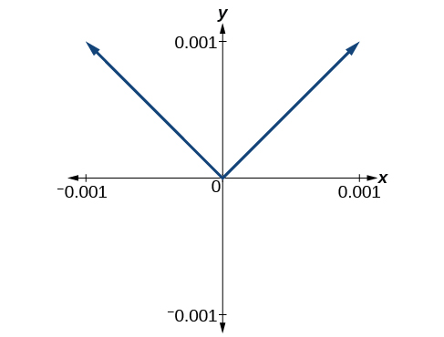
What are the characteristics of a graph that is not differentiable at a point? Here are some examples in which function is not differentiable at
In Figure 11, we see the graph of
Notice that, as approaches 2 from the left, the left-hand limit may be observed to be 4, while as approaches 2 from the right, the right-hand limit may be observed to be 6. We see that it has a discontinuity at
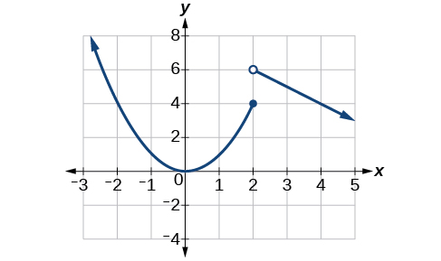
In Figure 12, we see the graph of We see that the graph has a corner point at
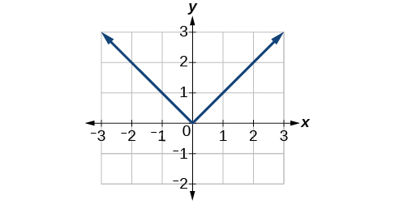
In Figure 13, we see that the graph of has a cusp at A cusp has a unique feature. Moving away from the cusp, both the left-hand and right-hand limits approach either infinity or negative infinity. Notice the tangent lines as approaches 0 from both the left and the right appear to get increasingly steeper, but one has a negative slope, the other has a positive slope.
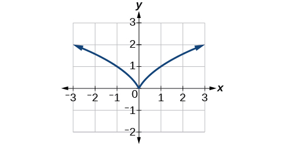
In Figure 14, we see that the graph of has a vertical tangent at Recall that vertical tangents are vertical lines, so where a vertical tangent exists, the slope of the line is undefined. This is why the derivative, which measures the slope, does not exist there.
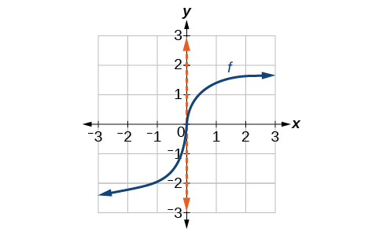
Determining Where a Function Is Continuous and Differentiable from a Graph
Using Figure 15, determine where the function is
- continuous
- discontinuous
- differentiable
- not differentiable
At the points where the graph is discontinuous or not differentiable, state why.
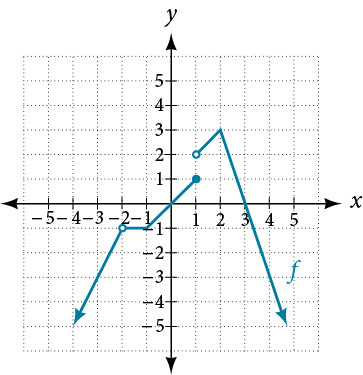
Solution
The graph of is continuous on The graph of has a removable discontinuity at and a jump discontinuity at See Figure 16.
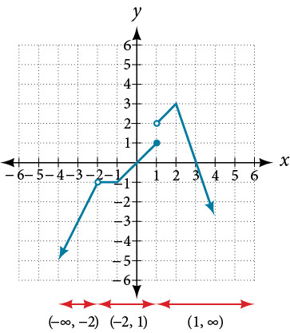
The graph of is differentiable on The graph of is not differentiable at because it is a point of discontinuity, at because of a sharp corner, at because it is a point of discontinuity, and at because of a sharp corner. See Figure 17.
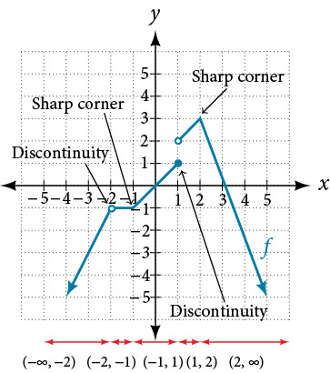
Finding an Equation of a Line Tangent to the Graph of a Function
The equation of a tangent line to a curve of the function at is derived from the point-slope form of a line, The slope of the line is the slope of the curve at and is therefore equal to the derivative of at The coordinate pair of the point on the line at is
If we substitute into the point-slope form, we have
The equation of the tangent line is
Finding the Equation of a Line Tangent to a Function at a Point
Find the equation of a line tangent to the curve at
Solution
Using:
Substitute and
Equation of tangent line at
Finding the Instantaneous Speed of a Particle
If a function measures position versus time, the derivative measures displacement versus time, or the speed of the object. A change in speed or direction relative to a change in time is known as velocity. The velocity at a given instant is known as instantaneous velocity.
In trying to find the speed or velocity of an object at a given instant, we seem to encounter a contradiction. We normally define speed as the distance traveled divided by the elapsed time. But in an instant, no distance is traveled, and no time elapses. How will we divide zero by zero? The use of a derivative solves this problem. A derivative allows us to say that even while the object’s velocity is constantly changing, it has a certain velocity at a given instant. That means that if the object traveled at that exact velocity for a unit of time, it would travel the specified distance.
Finding the Instantaneous Velocity
A ball is tossed upward from a height of 200 feet with an initial velocity of 36 ft/sec. If the height of the ball in feet after seconds is given by find the instantaneous velocity of the ball at
Solution
First, we must find the derivative . Then we evaluate the derivative at using and
Analysis
This result means that at time seconds, the ball is dropping at a rate of 28 ft/sec.
Key Equations
| average rate of change | |
| derivative of a function |
Key Concepts
- The slope of the secant line connecting two points is the average rate of change of the function between those points. See Example 1.
- The derivative, or instantaneous rate of change, is a measure of the slope of the curve of a function at a given point, or the slope of the line tangent to the curve at that point. See Example 2, Example 3, and Example 4.
- The difference quotient is the quotient in the formula for the instantaneous rate of change:
- Instantaneous rates of change can be used to find solutions to many real-world problems. See Example 5.
- The instantaneous rate of change can be found by observing the slope of a function at a point on a graph by drawing a line tangent to the function at that point. See Example 6.
- Instantaneous rates of change can be interpreted to describe real-world situations. See Example 7 and Example 8.
- Some functions are not differentiable at a point or points. See Example 9.
- The point-slope form of a line can be used to find the equation of a line tangent to the curve of a function. See Example 10.
- Velocity is a change in position relative to time. Instantaneous velocity describes the velocity of an object at a given instant. Average velocity describes the velocity maintained over an interval of time.
- Using the derivative makes it possible to calculate instantaneous velocity even though there is no elapsed time. See Example 11.
Section Exercises
Verbal
How is the slope of a linear function similar to the derivative?
Solution
The slope of a linear function stays the same. The derivative of a general function varies according to Both the slope of a line and the derivative at a point measure the rate of change of the function.
What is the difference between the average rate of change of a function on the interval and the derivative of the function at
A car traveled 110 miles during the time period from 2:00 P.M. to 4:00 P.M. What was the car's average velocity? At exactly 2:30 P.M., the speed of the car registered exactly 62 miles per hour. What is another name for the speed of the car at 2:30 P.M.? Why does this speed differ from the average velocity?
Solution
Average velocity is 55 miles per hour. The instantaneous velocity at 2:30 p.m. is 62 miles per hour. The instantaneous velocity measures the velocity of the car at an instant of time whereas the average velocity gives the velocity of the car over an interval.
Explain the concept of the slope of a curve at point
Suppose water is flowing into a tank at an average rate of 45 gallons per minute. Translate this statement into the language of mathematics.
Solution
The average rate of change of the amount of water in the tank is 45 gallons per minute. If is the function giving the amount of water in the tank at any time then the average rate of change of between and is
Algebraic
For the following exercises, use the definition of derivative to calculate the derivative of each function.
Solution
Solution
Solution
Solution
Solution
Solution
For the following exercises, find the average rate of change between the two points.
and
and
Solution
and
and
Solution
undefined
For the following polynomial functions, find the derivatives.
Solution
Solution
For the following functions, find the equation of the tangent line to the curve at the given point on the curve.
Solution
For the following exercise, find such that the given line is tangent to the graph of the function.
Solution
or
Graphical
For the following exercises, consider the graph of the function and determine where the function is continuous/discontinuous and differentiable/not differentiable.
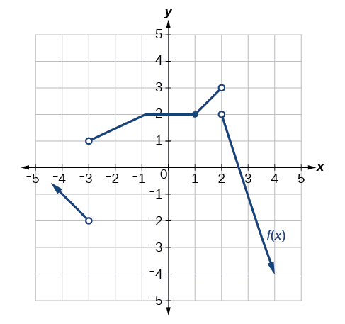
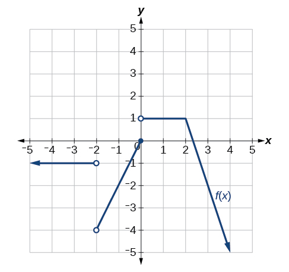
Solution
Discontinuous at and Not differentiable at –2, 0, 2.
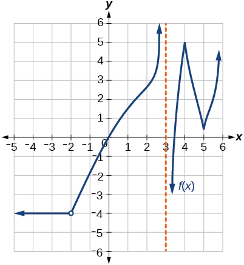
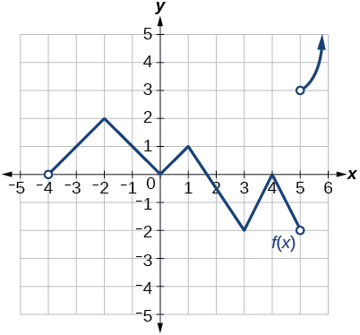
Solution
Discontinuous at Not differentiable at -4, –2, 0, 1, 3, 4, 5.
For the following exercises, use Figure 20 to estimate either the function at a given value of or the derivative at a given value of as indicated.
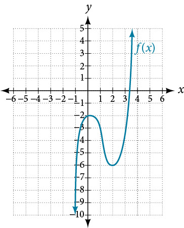
Solution
Solution
Solution
Solution
Solution
Sketch the function based on the information below:
,
Technology
Numerically evaluate the derivative. Explore the behavior of the graph of around by graphing the function on the following domains: , , and . We can use the feature on our calculator that automatically sets Ymin and Ymax to the Xmin and Xmax values we preset. (On some of the commonly used graphing calculators, this feature may be called ZOOM FIT or ZOOM AUTO). By examining the corresponding range values for this viewing window, approximate how the curve changes at that is, approximate the derivative at
Solution
Answers vary. The slope of the tangent line near is 2.
Real-World Applications
For the following exercises, explain the notation in words. The volume of a tank of gasoline, in gallons, minutes after noon.
Solution
At 12:30 p.m., the rate of change of the number of gallons in the tank is –20 gallons per minute. That is, the tank is losing 20 gallons per minute.
Solution
At 200 minutes after noon, the volume of gallons in the tank is changing at the rate of 30 gallons per minute.
For the following exercises, explain the functions in words. The height, of a projectile after seconds is given by
Solution
The height of the projectile after 2 seconds is 96 feet.
Solution
The height of the projectile at seconds is 96 feet.
Solution
The height of the projectile is zero at and again at In other words, the projectile starts on the ground and falls to earth again after 5 seconds.
For the following exercises, the volume of a sphere with respect to its radius is given by
Find the average rate of change of as changes from 1 cm to 2 cm.
Find the instantaneous rate of change of when
Solution
For the following exercises, the revenue generated by selling items is given by
Find the average change of the revenue function as changes from to
Find and interpret.
Solution
$50.00 per unit, which is the instantaneous rate of change of revenue when exactly 10 units are sold.
Find and interpret. Compare to and explain the difference.
For the following exercises, the cost of producing cellphones is described by the function
Find the average rate of change in the total cost as changes from
Solution
$21 per unit
Find the approximate marginal cost, when 15 cellphones have been produced, of producing the 16th cellphone.
Find the approximate marginal cost, when 20 cellphones have been produced, of producing the 21st cellphone.
Solution
$36
Extension
For the following exercises, use the definition for the derivative at a point to find the derivative of the functions.
Solution
Solution
Chapter Review Exercises
Finding Limits: A Numerical and Graphical Approach
For the following exercises, use Figure 21.
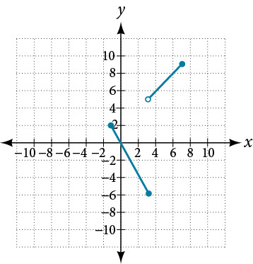
Solution
2
Solution
does not exist
At what values of is the function discontinuous? What condition of continuity is violated?
Solution
Discontinuous at does not exist jump discontinuity, and does not exist
Using Table 1, estimate
| −0.1 | 2.875 |
| −0.01 | 2.92 |
| −0.001 | 2.998 |
| 0 | Undefined |
| 0.001 | 2.9987 |
| 0.01 | 2.865 |
| 0.1 | 2.78145 |
| 0.15 | 2.678 |
For the following exercises, with the use of a graphing utility, use numerical or graphical evidence to determine the left- and right-hand limits of the function given as approaches If the function has limit as approaches state it. If not, discuss why there is no limit.
Solution
Solution
Does not exist
Finding Limits: Properties of Limits
For the following exercises, find the limits if and
Solution
Solution
Solution
For the following exercises, evaluate the limits using algebraic techniques.
Solution
Solution
Continuity
For the following exercises, use numerical evidence to determine whether the limit exists at If not, describe the behavior of the graph of the function at
Solution
At the function has a vertical asymptote.
Solution
At the function has a vertical asymptote.
Solution
Removable discontinuity at
For the following exercises, determine where the given function is continuous. Where it is not continuous, state which conditions fail, and classify any discontinuities.
Solution
Removable discontinuity at
Solution
Removable discontinuity at , discontinuity at
Solution
Removable discontinuity at , discontinuity at
Derivatives
For the following exercises, find the average rate of change
Solution
Solution
Solution
For the following exercises, find the derivative of the function.
Solution
Find the equation of the tangent line to the graph of at the indicated value.
;
For the following exercises, with the aid of a graphing utility, explain why the function is not differentiable everywhere on its domain. Specify the points where the function is not differentiable.
Solution
The function would not be differentiable at however, 0 is not in its domain. So it is differentiable everywhere in its domain.
Given that the volume of a right circular cone is and that a given cone has a fixed height of 9 cm and variable radius length, find the instantaneous rate of change of volume with respect to radius length when the radius is 2 cm. Give an exact answer in terms of
Practice Test
For the following exercises, use the graph of in Figure 22.
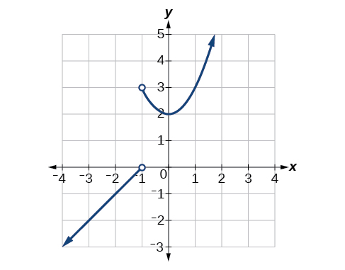
Solution
3
Solution
0
Solution
At what values of is discontinuous? What property of continuity is violated?
For the following exercises, with the use of a graphing utility, use numerical or graphical evidence to determine the left- and right-hand limits of the function given as approaches If the function has a limit as approaches state it. If not, discuss why there is no limit
Solution
and Thus, the limit of the function as approaches 2 does not exist.
For the following exercises, evaluate each limit using algebraic techniques.
Solution
For the following exercises, determine whether or not the given function is continuous. If it is continuous, show why. If it is not continuous, state which conditions fail.
Solution
For the following exercises, use the definition of a derivative to find the derivative of the given function at
Solution
Removable discontinuity at
Solution
For the graph in Figure 23, determine where the function is continuous/discontinuous and differentiable/not differentiable.
For the following exercises, with the aid of a graphing utility, explain why the function is not differentiable everywhere on its domain. Specify the points where the function is not differentiable.
Solution
Discontinuous at −2, 0, not differentiable at −2, 0, 2
For the following exercises, explain the notation in words when the height of a projectile in feet, is a function of time in seconds after launch and is given by the function
Solution
Not differentiable at (no limit)
Solution
The height of the projectile at Seconds
Solution
The average velocity from
For the following exercises, use technology to evaluate the limit.
Solution
Evaluate the limit by hand.
At what value(s) of is the function below discontinuous?
Solution
For the following exercises, consider the function whose graph appears in Figure 24.
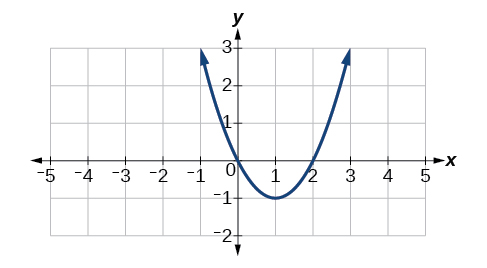
Find the average rate of change of the function from
Solution
2
Find all values of at which
Solution
Find all values of at which does not exist.
Find an equation of the tangent line to the graph of the indicated point:
Solution
For the following exercises, use the function .
Graph the function by entering and then by entering .
Explore the behavior of the graph of around by graphing the function on the following domains, [0.9, 1.1], [0.99, 1.01], [0.999, 1.001], and [0.9999, 1.0001]. Use this information to determine whether the function appears to be differentiable at
Solution
The graph is not differentiable at (cusp).
For the following exercises, find the derivative of each of the functions using the definition:
Solution
Solution
Solution
Solution
Analysis
We can use a graphing utility to graph the function and the tangent line. In so doing, we can observe the point of tangency at as shown in Figure 19.
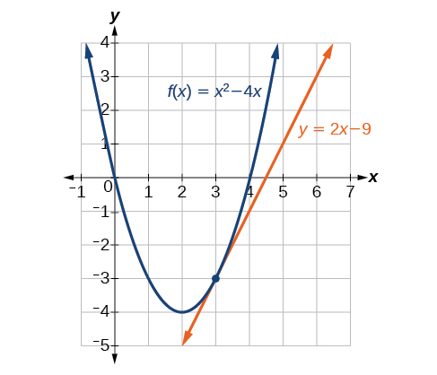